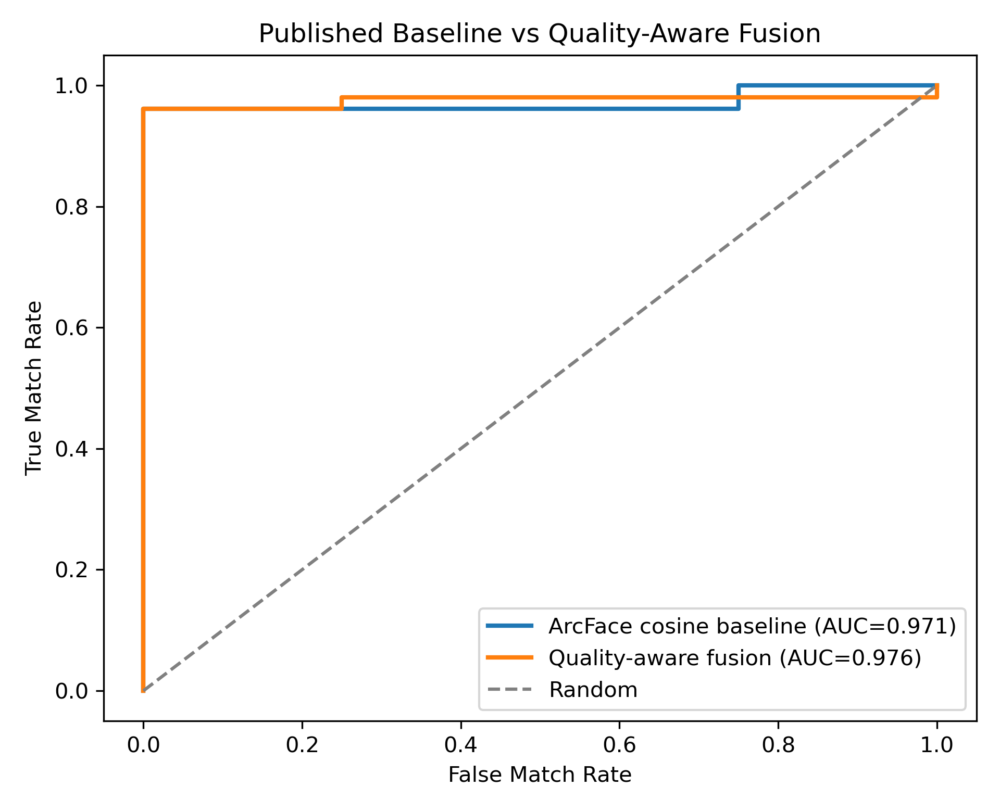
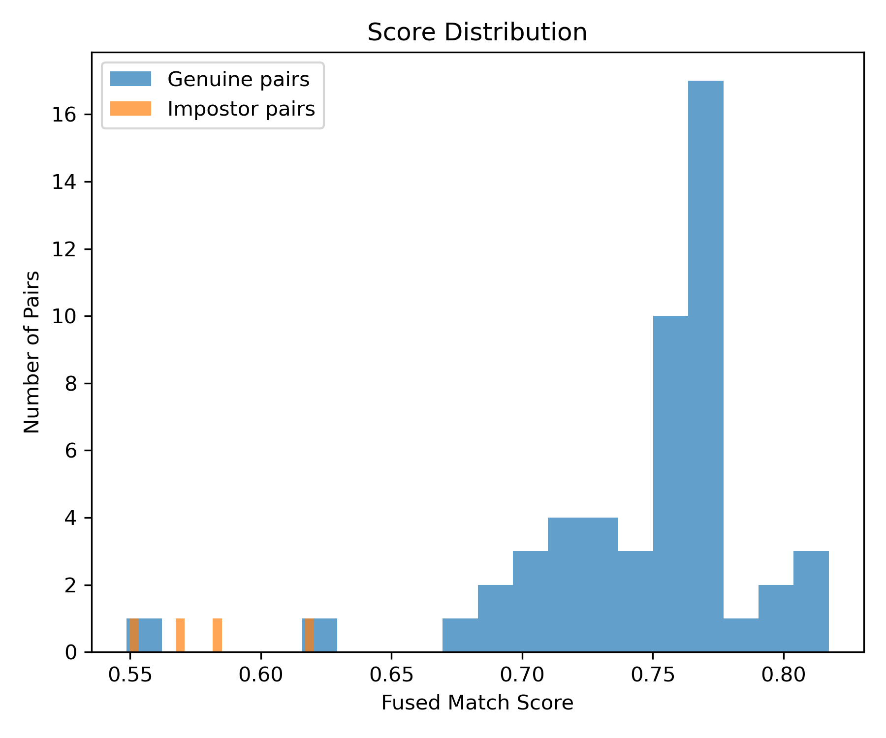
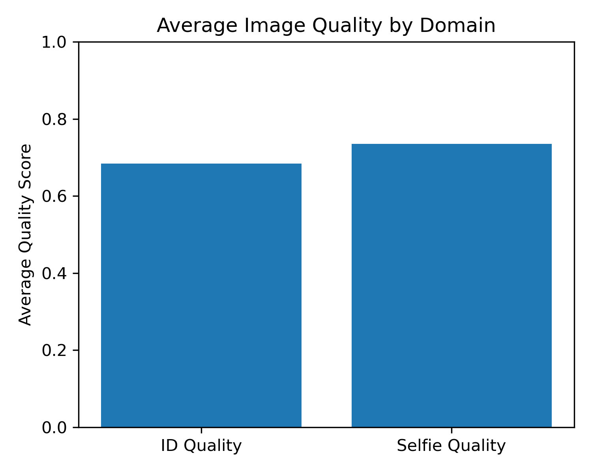
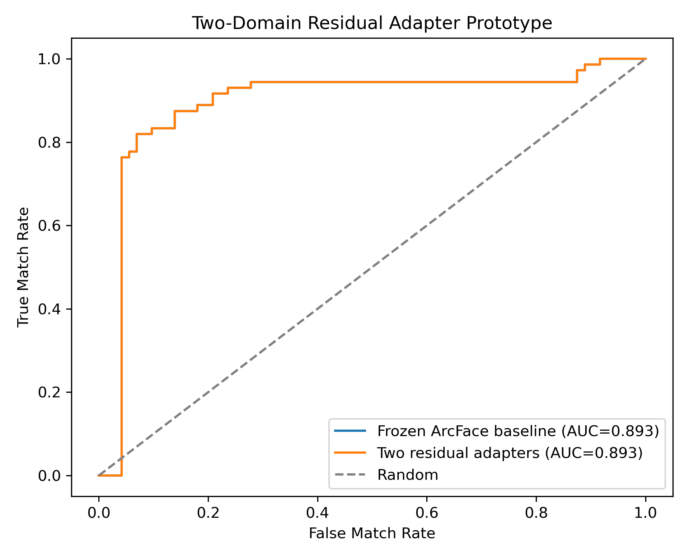

Key contribution
Face Bridge adds a quality-aware decision layer that adjusts ID-to-selfie match confidence using blur, illumination, and face-visibility cues on top of pretrained face embeddings.
Computer Vision Project
A domain-aware face verification framework for matching printed ID photos with live selfies, backed by an experiment that combines pretrained ArcFace embeddings with blur, illumination, and face-visibility cues.

Poster Thesis
Face Bridge adds a quality-aware decision layer that adjusts ID-to-selfie match confidence using blur, illumination, and face-visibility cues on top of pretrained face embeddings.
The poster frames ID photos and selfies as different visual domains, motivating separate processing paths and score-level fusion for document artifacts, selfie variation, and quality mismatch.
The implemented experiment validates the quality-aware fusion component against an ArcFace cosine baseline. The full dual-encoder framework remains a larger-scale research direction.
Method
Detected ID and selfie faces are aligned and encoded with pretrained face-recognition backbones. The experiment uses ArcFace-style cosine similarity as the published baseline.
Classic computer-vision signals estimate whether each input is usable: brightness for exposure, Laplacian sharpness for blur, and detector success for face visibility.
The final verification score combines embedding similarity with pair-level quality confidence, making the decision more interpretable under blur or difficult lighting.
Computer Vision Contribution
The encoder provides the identity signal; the quality layer estimates how much trust to place in that signal. This is the poster's practical novelty: the system does not only ask whether two embeddings are close, it also asks whether the image pair is reliable enough for that comparison.
quality score = brightness + sharpness + face visibility
final score = embedding similarity + quality confidence
Implementation: 0.35 brightness + 0.35 sharpness + 0.30 visibility, fused with cosine similarity.
Experimental Validation
The experiment tested the quality-aware fusion component using pretrained ArcFace face embeddings. The baseline is ArcFace cosine similarity alone; the proposed validation adds brightness, sharpness, and face-visibility confidence to the final score.
This is intentionally framed as initial evidence. The broader dual-encoder framework is part of the proposed research direction and needs larger, more diverse validation before it should be claimed as a proven improvement.
| Method | ROC-AUC | EER |
|---|---|---|
| ArcFace cosine baseline | 0.971 | 0.019 |
| ArcFace + quality-aware fusion | 0.976 | 0.019 |
Results


Baseline Comparison
| Method | ROC-AUC | EER | Accuracy @ EER |
|---|---|---|---|
| Published baseline: ArcFace cosine similarity | 0.971 | 0.019 | 0.964 |
| Proposed: quality-aware fused score | 0.976 | 0.019 | 0.964 |

Theory vs Evidence
The poster proposes separate ID and selfie processing paths to handle printed-photo artifacts and live-camera variation. A small residual-adapter prototype matched, but did not outperform, frozen ArcFace on the public sample. This keeps the dual-encoder idea as a research direction rather than the main validated result.
Poster Narrative
ID photos and selfies differ in pose, lighting, capture device, compression, and image age.
The contribution is the quality-aware decision layer, not a new face-recognition backbone.
Quality-aware fusion modestly improved ROC-AUC from 0.971 to 0.976 over ArcFace cosine similarity.
The public evaluation subset is small, dataset diversity is limited, and full dual-encoder validation remains future work.
Multi-frame selfie quality weighting, liveness/spoofing integration, and fairness-aware quality evaluation are the next steps.
Research Positioning
FaceNet and ArcFace already established strong face embeddings, so Face Bridge does not claim novelty in the base encoder.
Prior ID-to-selfie work has explored domain-specific matching and dual-network ideas, so the dual-domain architecture is presented as a framework direction rather than the main proven result.
Face image quality has been studied in prior work. The poster's defensible contribution is integrating interpretable quality cues into an ID-to-selfie decision pipeline and validating that component against a baseline.
References
These papers were used to frame the poster, baseline comparison, and future-work direction. The implementation uses pretrained DeepFace/ArcFace-style embeddings and a lightweight quality-aware fusion layer; it does not reimplement every cited method.
Taigman, Yang, Ranzato, and Wolf, CVPR 2014.
Supports the detect, align, represent, and classify framing for modern face verification.
Schroff, Kalenichenko, and Philbin, CVPR 2015.
Motivates compact face embeddings where distance corresponds to identity similarity.
Deng, Guo, Xue, and Zafeiriou, CVPR 2019.
Provides the strong published face-recognition baseline used for the cosine-similarity comparison.
Cao, Shen, Xie, Parkhi, and Zisserman, FG 2018.
Grounds the discussion of pose, age, illumination, and demographic variation in face datasets.
Chopra, Hadsell, and LeCun, CVPR 2005.
Supports the paired-image verification and Siamese-style matching perspective.
Hadsell, Chopra, and LeCun, CVPR 2006.
Provides the contrastive-learning foundation for pulling similar samples together and pushing dissimilar samples apart.
Terhorst, Kolf, Damer, Kirchbuchner, and Kuijper, CVPR 2020.
Motivates estimating whether a face image is reliable enough for recognition.
Meng, Zhao, Huang, and Zhou, CVPR 2021.
Connects face-recognition embeddings with quality-aware confidence under difficult image conditions.
Hernandez-Ortega, Galbally, Fierrez, Haraksim, et al., 2019.
Supports the idea that face quality can be estimated as suitability for downstream recognition.
Pertuz, Puig, and Garcia, Pattern Recognition 2013.
Supports using focus and sharpness operators as interpretable computer-vision quality cues.
Fawcett, Pattern Recognition Letters 2006.
Supports ROC-AUC as the main poster metric for comparing verification performance across thresholds.
Reproducibility
The public repository includes source code, aggregate metrics, and plots. Raw biometric images, ID documents, Kaggle credentials, model weights, local embedding caches, and pair-level path CSVs are excluded.
Project code is MIT licensed. Original documentation and aggregate figures are CC BY-NC 4.0 unless otherwise noted. Third-party datasets and pretrained weights remain under their original terms.